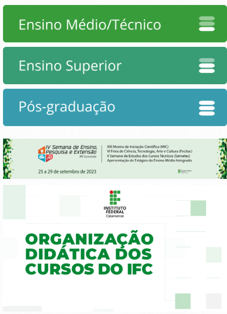

| Brasil | CORONAVÍRUS (COVID-19) |
Simplifique! | Participe | Acesso à informação | Legislação | Canais | |||||||||
Institucional
Estude no IFC
Ensino
Pesquisa e inovação
Extensão e estágio
Portal do Estudante
Setores
Transparência
Fale Conosco
Acesso à informação
Ouvidoria
|  | |